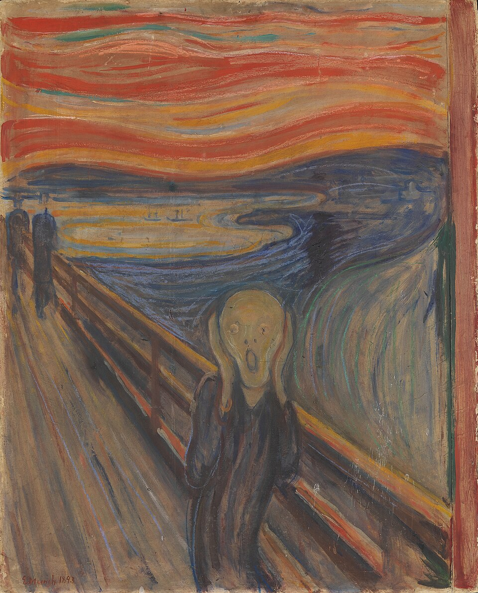
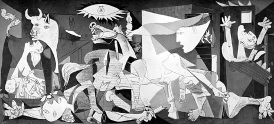
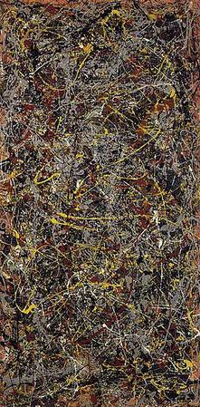

The Scream
Edvard Munch
A vivid image of anxiety and emotion, expressed through a dramatic landscape.
Collection 05
Explore bold experiments and new ways of seeing that changed the language of art.
Favourites: 0

Edvard Munch
A vivid image of anxiety and emotion, expressed through a dramatic landscape.

Pablo Picasso
A monumental anti-war work whose fractured forms convey grief and protest.

Andy Warhol
Everyday packaging becomes the subject of a landmark Pop Art series.

Wassily Kandinsky
Geometric forms and colour create a lively visual rhythm across the canvas.

René Magritte
A familiar portrait is made strange by a carefully placed, floating apple.

Jackson Pollock
Layered gestures and drips make the act of painting part of the finished work.